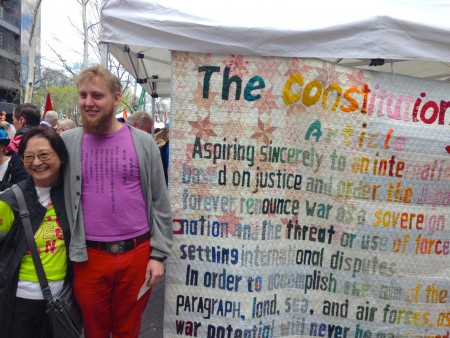

Friends,
Today, President Obama is in Hiroshima, honoring "the memory of all innocents who were lost" during World War II.
Members of his administration have adamantly insisted he will not apologize for the atomic bombings of Hiroshima and Nagasaki, which claimed a quarter-million lives.
"He will recognize the painful past, but he won't revisit it," according to an essay published in The Atlantic, "Hiroshima and the Politics of Apologizing."
But actions speak louder than words, and President Obama can still do much to live up to his Nobel Peace Prize for promoting nuclear nonproliferation.
In many cultures and settings, apologies are an important way of expressing support and solidarity. In August 2014, members of FOR-USA and the Japan FOR stood together during the Centennial conference of the International Fellowship of Reconciliation. In a poignant reconciliation ceremony you can watch online, Isaac Beachy, then-vice-chair of FOR-USA's National Council, said:
We -- people from the United States; members of FOR-USA -- we deeply mourn and are ashamed and angry about what our government did in our name in 1945 by dropping the atomic bomb on Hiroshima and Nagasaki.
We want to recognize the destruction that was carried out in those cities, that affected you and your families, all of Japan. ... And we also want to apologize, not only to the people of Japan for that event, but also to the international community because it was a crime against humanity.
And it was, in that event, a lowering of the moral bar for all of humanity.
Isaac continued by noting that this was not simply a historic concern, but a present-day issue since the United States continues to be the "largest producer of nuclear weapons in the world."
Yet despite President Obama's declaration after winning the Nobel Peace Prize that he would "seek the peace and security of a world without nuclear weapons," this year he announced a 30-year, $1 trillion plan to upgrade the United States' cache of nuclear weaponry.
Building on Isaac's message from 2014, this spring FOR-USA Executive Director Rev. Kristin Stoneking wrote to President Obama as part of the Peace and Planet campaign urging him to visit Hiroshima and take concrete steps for peace.
After learning that the president would indeed visit Hiroshima, Kristin wrote:
I was pleased to see that you have decided to visit Hiroshima on your upcoming trip to Japan. Thank you for including this stop in your itinerary; it means so much to the Japanese and U.S. people. It is an important act in acknowledging the ways in which our fates and responsibilities for healing and peace are intertwined as a result of our bombing of Hiroshima and Nagasaki.
I hope you will go farther than just to visit, though. This is an important opportunity to announce concrete steps toward global nuclear disarmament, such as:
- Calling for negotiations for complete elimination of nuclear weapons as required by Article VI of the Nuclear Nonproliferation Treaty (NPT).
- Announcing unilateral reductions in the U.S. nuclear arsenal, much as President George H.W. Bush did. This would be an important step toward revitalizing disarmament diplomacy.
- Canceling the $1 trillion plan to build the next generation of nuclear weapons and their delivery systems.
Furthermore, I hope you will affirm the preciousness of Article 9 in the Japanese Constitution. Its recent reinterpretation is not consistent with its original intent for keeping Japan out of international disputes. Please take the opportunity of your visit to affirm your support of peaceful resolutions for international conflicts.
May your trip be filled with many blessings and opportunities to exhibit why you will forever carry the honor of being a Nobel Peace Prize winner.
After reading a copy of Kristin's letter, Japan FOR General Secretary Kyoko Iitaka wrote in praise that "we all share our prayers that this would bring a turning point to decrease (eliminate!) the nuclear weapons to threat each other in the world."
Today, you have an unique opportunity to ask the president to live up to a vision he's already said he seeks -- a world without nuclear weapons. Building on our work with Japan FOR, FOR-USA is supporting an effort from United for Peace and Justice to urge the president to meet with Hiroshima nuclear survivors and cancel the United States' upgrades to nuclear wearpons.
Sign the United for Peace and Justice letter to President Obama: #NoNukes!
 Ethan Vesely-Flad Ethan Vesely-Flad
Director of National Organizing
Fellowship of Reconciliation
Photos: Survivors of the Hiroshima and Nagasaki bombings (hibakusha) and their supporters at the Peace and Planet march to abolish nuclear weapons, April 2015; Isaac Beachy (wearing a shirt with Article 9 printed in Japanese) with the creator of the Article 9 quilt; another Japanese citizen against nuclear weapons at the Peace and Planet march in April 2015. |